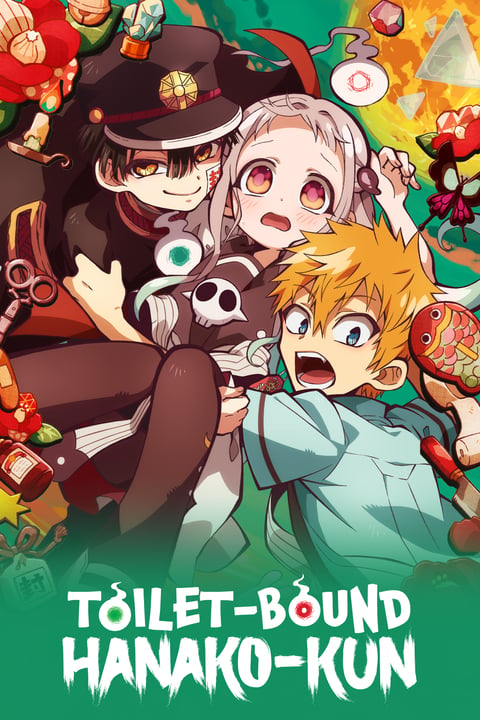
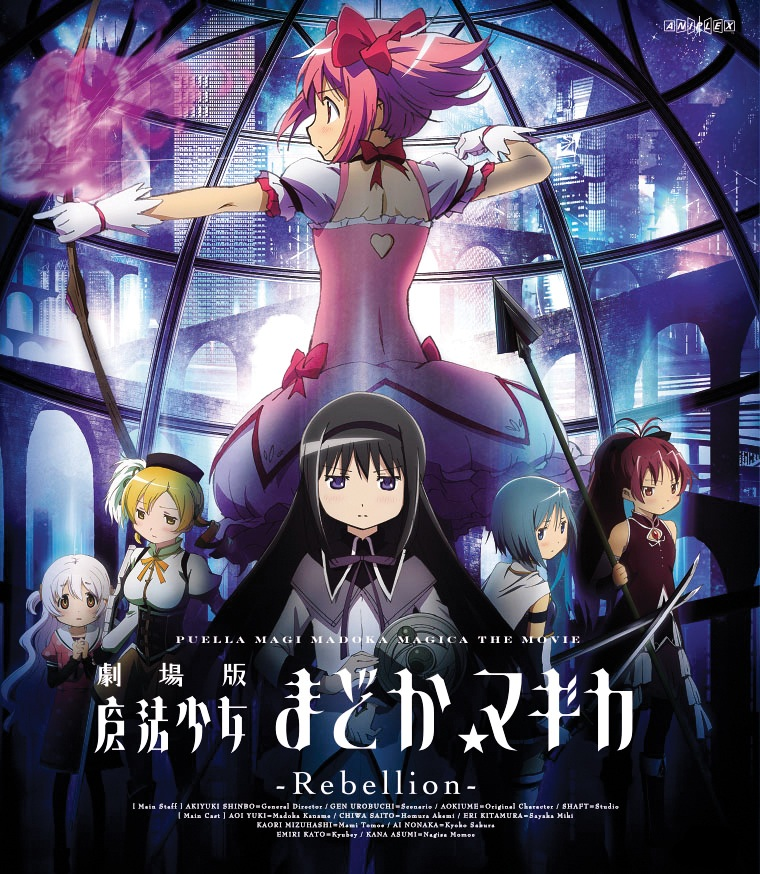
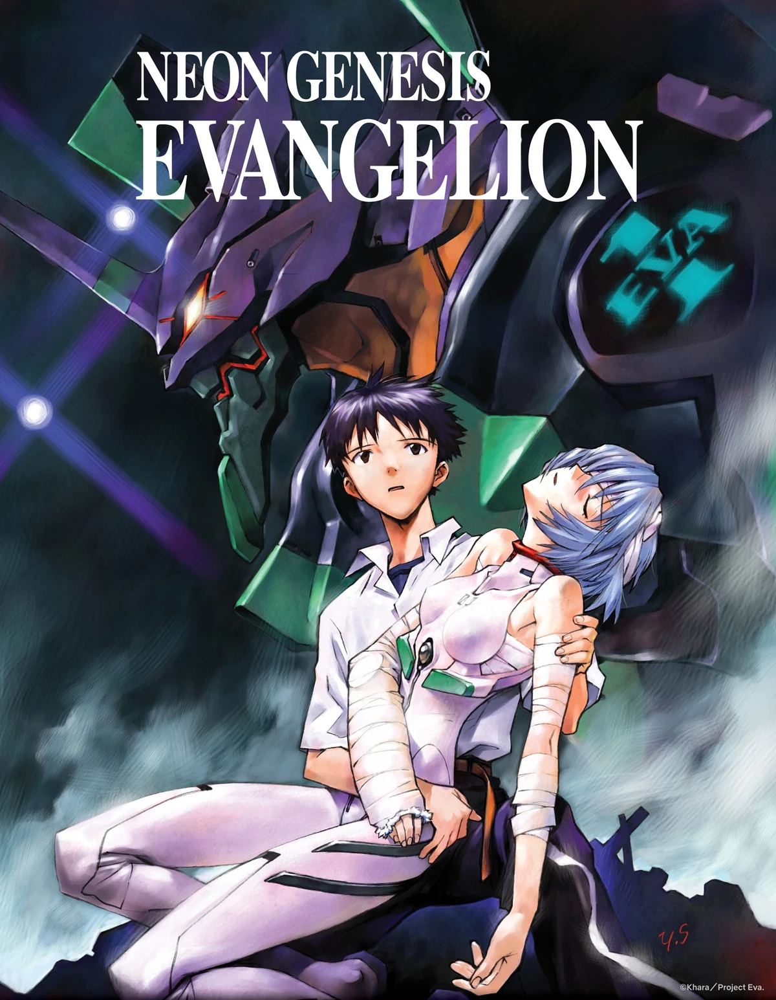
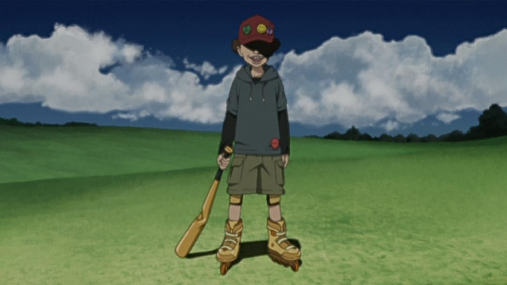
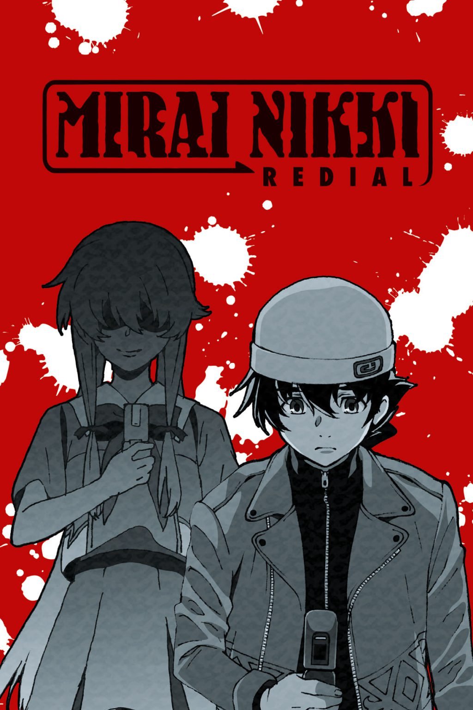
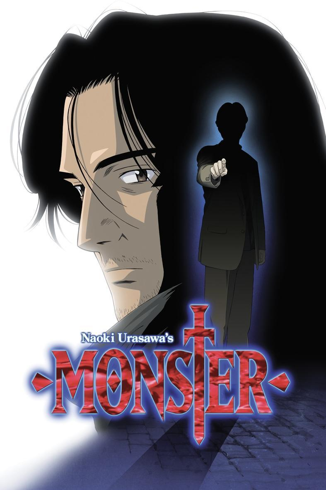

Made in Abyss
Una niña explora un abismo lleno de peligros en busca de su madre.
Jibaku Shōnen Hanako-kun
Un espíritu en un baño escolar cumple deseos a cambio de un precio.
Madoka Magica Rebellion
Una chica descubre oscuros secretos sobre las chicas mágicas y su destino.
Neon Genesis Evangelion
Evangelion es un anime de mechas y drama psicológico.
Paranoia Agent
Paranoia Agent es un anime sobre culpa, estrés social y un agresor misterioso.

Death Parade
Death Parade es un anime donde las almas son juzgadas a través de juegos en un bar.
Shiki
Shiki es un anime de horror sobre vampiros que atacan un pueblo.

Black Lagon
Black Lagoon es un anime de acción sobre mercenarios en un mundo corrupto.
Kaiba
Kaiba es un anime sobre la transferencia de memorias y la identidad en un mundo surrealista.

Gantz
Gantz es un anime sobre personas revividas para cazar extraterrestres en un juego mortal.
Mirai Nikki
Un diario del futuro lo atrapa en un juego mortal.
Monster
Un doctor persigue a un asesino que salvó años atrás.